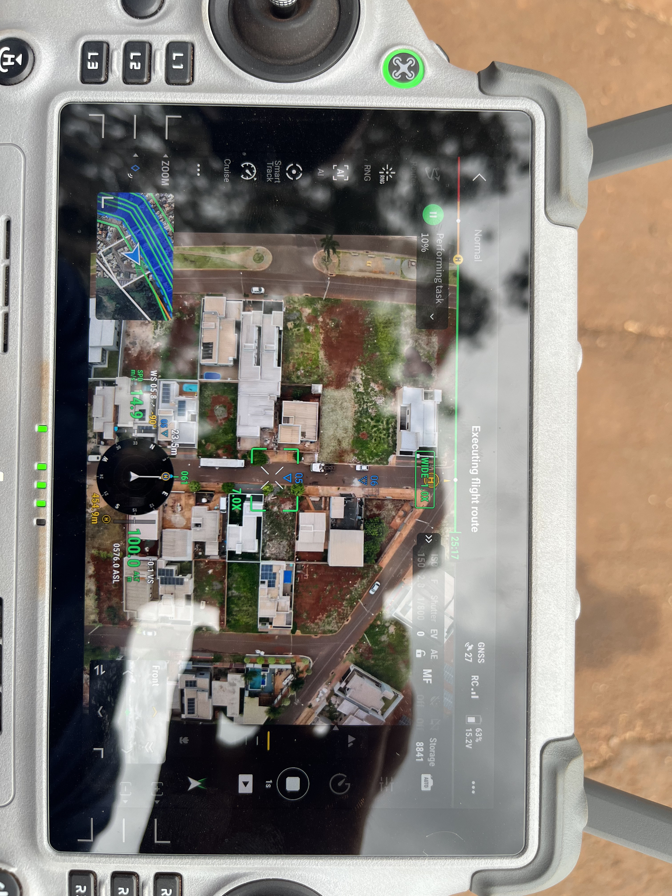

Engenharia com drones de última geração
O mapeamento com drone revolucionou a topografia e o monitoramento de áreas. Com o DJI Matrice 4 Enterprise e tecnologia RTK/PPK, a AJ TopoGeo cobre 100% da área com precisão centimétrica — sem amostragem por estimativa, com dados em tempo real e total rastreabilidade.
O que entregamos com o drone
- Ortomosaico RGB de alta resolução georreferenciado
- MDT e MDS – modelos digitais de terreno e de superfície
- Topografia 3D e nuvem de pontos
- Curvas de nível e cálculo de volumes (corte e aterro)
- Modelos 3D para inspeção de fachadas e linhas de transmissão
- Filmagens e fotos aéreas para inspeção e marketing
O que é um ortomosaico?
O ortomosaico (ou ortofoto) é uma imagem aérea de alta resolução, corrigida geometricamente e georreferenciada, formada pela junção de centenas de fotos capturadas pelo drone. Sobre ele é possível medir distâncias, áreas e perímetros com precisão, como em uma planta real da propriedade.
Agricultura de precisão com drone
Para o agronegócio, o mapeamento aéreo é a base da agricultura de precisão. Geramos mapas de vigor vegetativo (NDVI e NDRE) para detectar estresse nutricional, além de mapas de prescrição para aplicação a taxa variável, compatíveis com John Deere, Trimble e CNH — o que pode gerar até 35% de economia em insumos.
Inteligência artificial aplicada às imagens
Vamos além do mapa: aplicamos visão computacional com modelos YOLO para contagem de estande de plantas em 100% da área, detecção de falhas de plantio, infestação de daninhas e contagem de gado — transformando imagens em decisões.